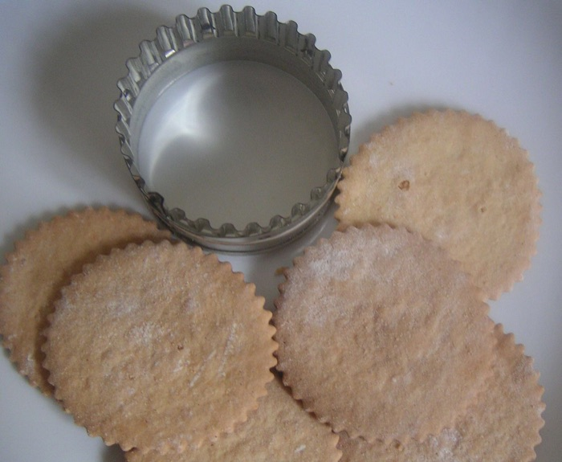

C++ was originally called "C with classes." Classes are probably the most fundamental feature of object-oriented programming. So what is a class, and how is it different from a struct? When should we create a new class?
The technical difference between a struct and a class in C++ is that in a struct, everything is publically accesible by default, whereas in a class everything is private to the class by default. But, in fact, typically programmers use structs for instances where some data structure has no methods associated with it, and classes where there are methods.

Here are some code examples: